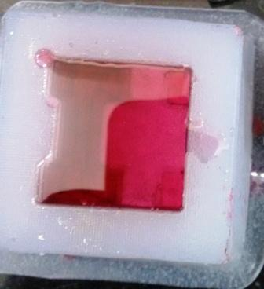

MOLDING AND CASTING
This weeks assignment is to Design a 3D mould, machine it, and cast parts from it.
Basics on Moulding and Casting
I went through some material on the internet, notably the Mold-Making-Casting-Class on the instructables website. and videos on smooth-on. The instructables' mold making and casting class is a very informative to start with.
The Design - Mobile phone stand
As part of the assignment i wanted to make something useful, and I tried making a Mobile phone stand, that could be casted. I used Unigraphics (NX-5) as my modelling software. The model construction is as shown in the following steps.
The mobile stand is made with compact dimensions of 30mmx30mmx25mm (length x width x height)
Milling the Mold
We used the Modella MDX-20 with offline fab modules to mill the mold. For rough cut we used 1/8 inch flat end mill and for finishing we used 1/16 inch ball nose end mill.
Casting
In casting part we used Liquid silicone rubber which was locally sourced by our fablab (TradeIndia/LSR), named as Liquid silicone rubber (LSR1).
First we found the volume of the mold cavity by pouring water and then measuring the weight. Then the two part LSR needs to be put in 10:1 ratio. I have used 90g of the part1(gel)(Resin) and then 9 gram (liquid)(Hardner). Then the both parts are thouroughly mixed. Then the mix is pored in to the mold cavity for setting. In order to prevent air bubble formation, the mix is poured from a height to the mold cavity. Syed and Ajith were very kind to guide me on the casting process. Also since the medium is bit dense, it would be a good idea to tap (vibrate) the mold to let any enrapped air bubbles escape to the top.

Casting - Metal
Babbit metal is heated in the furnace and then poured onto the flexible rubber mold. The first try resulted in lot of cavities. later I tapped the mold filled with molten metal to let the bubbles escape, and also tried filling the mold slowly and in mutiple layers with intermitent tapping.
Casting using plastic
I also tried casting the mobile stand using High gloss transparent plastic. A droplet of red pigmet is also added for visual appeal. The resin and hardner needs to be added in the ratio of 10:6.


Conclusion
This too was a fruitful learning week, with lots of hands on learning. I am happy to make a useful product as part of the assignment. I have also done few mistakes like not giving the chamfer on top face while milling on the Modella, which resulted in manual chamfering to prevent the tool shank fouling against the mold. Also the large cavities in the intial few tries of the metal casting was solved by repeated tapping of the mold to allow the trapped air to escape. The finished product was able to do its designed job, and few of my fellow fabacademicians already started using it.
The files created as part this week's assignment is available via the link below.